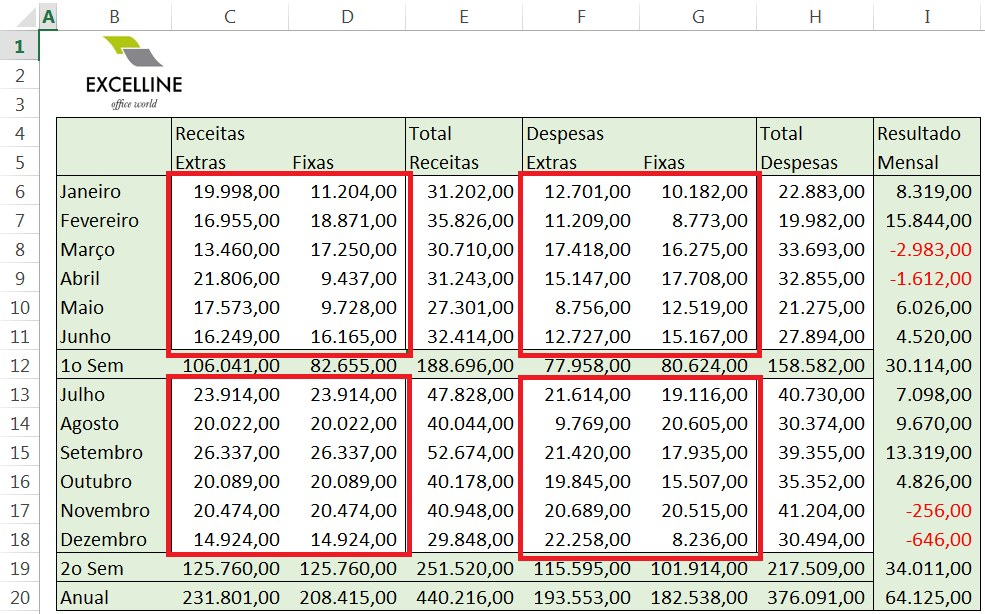
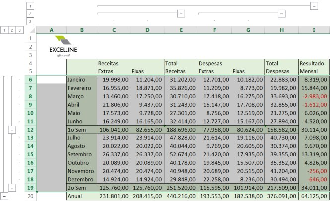
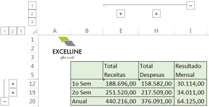

O agrupamento de dados existe no Excel desde as primeiras versões e continua pouco explorado. Ele cria hierarquia entre linhas e colunas, de modo que uma planilha extensa possa atender a públicos diferentes, cada um com seu nível de informação, da mais completa à mais resumida, sem copiar partes da planilha nem fazer resumos em paralelo.
Entendendo o modelo
Nossa planilha tem receitas e despesas mês a mês, com subtotais por semestre e total no ano. As receitas e despesas se dividem em extras e fixas e o resultado mensal é receitas menos despesas. Só as células em vermelho recebem digitação e todas as demais são fórmulas.

A hierarquia aparece nas colunas, onde as duas colunas de receitas são totalizadas em TOTAL RECEITAS, as duas de despesas em TOTAL DESPESAS e os dois totais compõem o RESULTADO MENSAL. Nas linhas o raciocínio se repete, porque janeiro a junho formam o primeiro semestre, julho a dezembro formam o segundo e os dois semestres formam o ano. Temos assim três agrupamentos lógicos nas colunas e três nas linhas.
Do lógico ao físico
Para o Excel passar a respeitar essa hierarquia criamos os grupos, sempre do menor para o maior, de dentro para fora.
- Selecione as colunas C:D e use DADOS, AGRUPAR. O Excel desenha um traço acima das colunas, com um botão (-) que oculta as duas colunas e deixa só o total e vira (+) para expandir de novo.
- Faça o mesmo com as colunas das despesas, F e G.
- Selecione as colunas C:H, todas as de receitas e despesas e agrupe de novo, criando um grupo maior que contém os outros.
- Repita para as linhas: janeiro a junho, julho a dezembro e, por fim, o grupo maior com todos os meses.

Agora a planilha tem três níveis hierárquicos em colunas e linhas e os botões numerados no canto superior esquerdo escolhem o nível exibido. Fechar e abrir grupos oculta e mostra a informação conforme a necessidade do leitor.

O agrupamento também vale para a impressão, que respeita o nível escolhido, completo, parcial ou apenas o resultado. Para limpar tudo use "limpar estrutura de tópicos" ou desagrupe grupo a grupo.